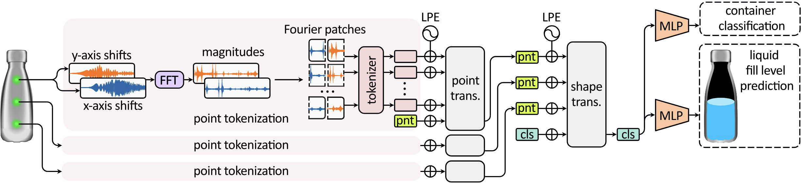

Learning to See Inside Opaque Liquid Containers using Speckle Vibrometry
Can you hear the contents of a Coke bottle?
TL;DR: Yes, we can! (and by "we," we mean a novel AI model). We accomplish this by sensing the tiny vibrations on the bottle's surface and relating them to the bottle's liquid level and type (i.e., Coke bottle, milk carton, etc.).
I'm intrigued—tell me (a little) more?
First, we must capture these tiny surface vibrations at high speeds. To achieve this, we develop a novel computational imaging system that can capture object vibrations remotely for a 2D grid of scene points.
We use our system to sense the vibrations of multiple scene containers at once, while we "excite" the vibrations using a nearby speaker by playing some sound.
capturing six containers
camera system
For each container, we measure two-axis vibrations at multiple surface points (three points in the figure above). We input the vibrations into a novel physics-inspired Vibration Transformer, which is trained to predict the container type and its hidden liquid level.
Why capture more than a single point per container?
The vibrations of many objects can be characterized by their resonant frequencies, or vibration modes. Each mode is described by two things: its frequency and its shape. For example, below is an illustration of the first four mode shapes of a rectangular membrane:
While a single vibration measurement on the object surface captures frequency-related information about the surface vibrations, capturing multiple points reduces ambiguity by adding the shape information as well – yielding more reliable predictions.
So why do you need an AI model for this task?
For a few special objects, like the wine glass below, the relation between the vibration response and the fill level is relatively straightforward (and not just because the glass is transparent). However, the vast majority of everyday containers have a rather complex vibration response that stems from complex geometry, heterogeneous materials, the fluid-structure interactions that alter stiffness and damping, and more. Don't believe us? Try for yourself. Press below the containers on the right to hear their response for different fill levels. Can you spot a pattern?
If you couldn't, don't blame yourself. The vibrational response depends on various factors, including object geometry, materials, fluid-structure interactions, and additional factors. Luckily, our Vibration Transformer has a more acute "ear" than you, and can successfully classify the container's hidden liquid level for a variety of containers (which we demonstrate experimentally).
Moreover, our architecture is robust to the vibration source, yielding correct liquid level estimates for controlled and ambient scene sound sources. And, our model generalizes to unseen container instances within known classes (e.g., training on five Coke cans of a six-pack, testing on a sixth) and fluid levels.
Experimental results
We trained our model on a dataset of 23 different container types and tested it in several application-specific validation categories:
(a) Within-distribution: Inference on containers from the 23-container dataset, but for novel speaker positions.
(b) Unseen instances: Inference on novel containers, whose type exists in the 23-container dataset.
(c) Unseen liquid levels: Inference of liquid levels not seen in the training set. For example, training on levels {0, 20, …, 100%} and testing on in-between levels {25, 50, 75%}.
(d) Ambient sound: Inference on sound excitation emulating ambient background sounds.
Error values indicate the MAE of the fill level prediction, as shown in the table below.
| Test Name | Fill Level Prediction | Container Classification | |
|---|---|---|---|
| Accuracy ↑ | MAE ↓ | Accuracy ↑ | |
| (a) within distribution | 0.98 | 0.01 ±0.03 | 1.00 |
| (b) unseen instances | 0.79 | 0.09 ±0.19 | 0.95 |
| (c) unseen liq. levels | N/A | 0.12 ±0.11 | 0.81 |
| (d) ambient sound | 0.92 | 0.04 ±0.12 | 0.97 |
|
(e) unseen liq. levels + ambient sound |
N/A | 0.15 ±0.15 | 0.67 |
|
(f) unseen instances + ambient sound |
0.59 | 0.16 ±0.23 | 0.77 |
Arrows indicate desired metric direction: ↑ Higher is better, ↓ Lower is better.
Future work
We seek to study what other hidden properties of objects can be revealed from their surface vibrations using our system. For example, have you ever received a birthday present and tried to guess what's inside by shaking the box?
We ask whether our method can be extended to inferring the existence of arbitrary objects within other containers, like boxes or even rooms? Potential applications of our approach could include identifying packaging errors, identifying the contents of shipping containers, and detecting the 3D location of people and objects in a room by only measuring the wall's vibrations.
BibTeX
@inproceedings{Kichler:2025,
title={Learning to See Inside Opaque Liquid Containers using Speckle Vibrometry},
author={Kichler, Matan and Bagon, Shai and Sheinin, Mark},
booktitle={Proceedings of the IEEE/CVF International Conference on Computer Vision (ICCV)},
year={2025}
}